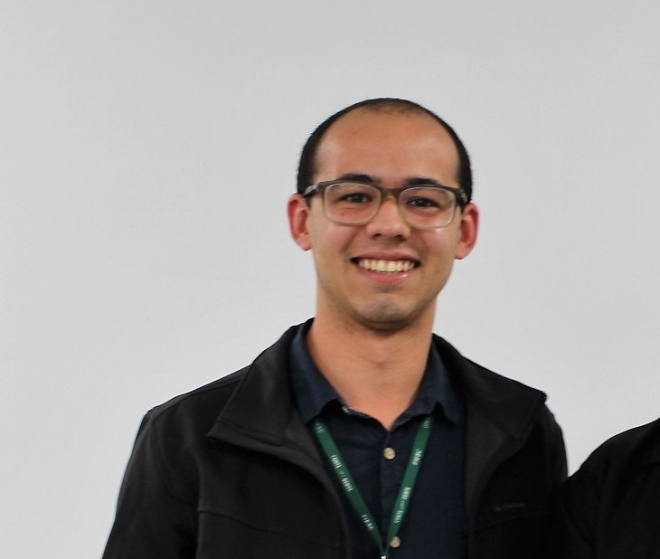

Mais sobre o desenvolvedor

Meu nome é Marco Aurelio:
Sou graduado em Engenharia Elétrica pela Universidade Federal de Uberlândia (UFU) e atuo como Analista de Gestão Operacional no Instituto Euvaldo Lodi de Santa Catarina (IEL/SC). Minha primeira experiencia profissional foi um estágio profissional na BRF S.A (fusão da Sadia e Perdigão) na área de Projetos e Engenharia. Lá era responsável dos projetos, com enfoque maior na área de elétrica. Tive a oportunidade de gerenciar 5 projetos e fazer parte de microprojetos que faziam parte de projetos maiores. Também fui responsável por automatização de alguns formulários da área, utilizando VBA. Finalizando o estágio e encerrando a empresa, me mudei para Florianópolis, em Março de 2017, para fazer o mestrado na UFSC, na área de eletromagnetismo e desde junho de 2017 trabalho no IEL e lá já trabalhei como Gestor de Projetos de convênios e coletivos de empresariais. No IEL, realizo gestão técnica e financeira dos projetos de convênios participando na contratação de terceiros, mapeamentos e diagnósticos, acompanhamento do projeto, fechamento e prestação de contas. Hoje sou Analista de Gestão Operacional, dando suporte aos negócios, fornecendo informações financeiras e operacionais e estou aprendendo mais sobre desenvolvimento, em linguagens como Python, Java, Javascript, MATLAB e outras.